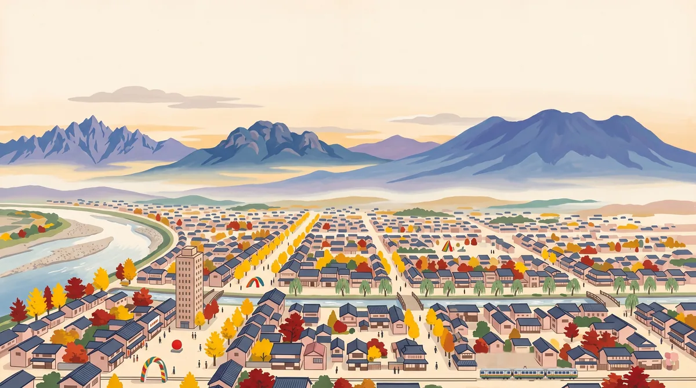

この版は、2026年12月20日（芸術祭の最終日）までの案内です。会期が終わったあとは、営業時間や休みが変わっているかもしれません。各カードの公式サイトで、最新の内容を確かめてください。

2026.10 — 12.20 ／ 確認日 10.10
前橋の中心市街地を、半日ほどで歩くための案内です。芸術祭（12/20まで）と、萩原朔太郎ゆかりの「詩のまち」を軸に、広瀬川のまわりをまとめました。12/20までの、期限つきの版です。
営業時間・料金・休みは、10月10日に公式ページを一件ずつ開いて確かめました。ただし確かめ方に差があるので、カードごとに印を付けています（下の説明）。
押せます 地図の番号を押すと、その場所の説明に飛びます。右に › が付いた行も同じです。 は、さわると説明が出ます。
カードの印の見方
水曜日を外してください。アーツ前橋・前橋文学館・萩原朔太郎記念館・芸術祭の会場は、水曜が休みです（10/14、21、28、11/4、11、18、25、12/2、9、16）。群馬県庁の展望ホールは、水曜も開いています（無休の記載）。白井屋ホテルのラウンジも無休ですが、水曜はランチが出ない日がほとんどです（10/14と12/2を除く8日。この日はティーのみ）。
日が短いです。日の入りは16:30台〜17:10。文学館は17:00閉館（入館は16:30まで）、アーツ前橋は18:00閉館です。そこで「文学館を先に、日の入りのころに県庁の展望ホールへ」という順が組みやすいと思います。
臨江閣は、2027年3月末まで休館で、敷地にも入れません。今回の予定からは外してください。
| 日 | 日の出 | 日の入り | 暗くなり切る | 最高 | 最低 |
|---|---|---|---|---|---|
| 10/15 | 5:51 | 17:09 | 17:35 | 21.9℃ | 13.4℃ |
| 11/1 | 6:06 | 16:48 | 17:15 | 19.1℃ | 9.6℃ |
| 11/15 | 6:21 | 16:36 | 17:03 | 16.4℃ | 7.0℃ |
| 12/1 | 6:36 | 16:29 | 16:57 | 13.8℃ | 4.3℃ |
| 12/15 | 6:48 | 16:30 | 16:58 | 11.5℃ | 1.9℃ |
| 12/20 | 6:51 | 16:31 | 17:00 | 10.9℃ | 1.3℃ |
日の出・日の入りは前橋市中心部の緯度経度からの計算値。気温は気象庁・前橋観測点の平年値（1991〜2020年）です。
歩き方の一例（順番は入れ替えてかまいません）
・9:00 前橋文学館が開く。朔太郎記念館（無料）はすぐ向かい
・10:00〜 アーツ前橋と、まわりの会場へ。昼は白井屋ホテルか、アーツ前橋のカフェ
・日の入りのころ 県庁の展望ホール（32階・無料）へ。開いているのは22:00まで
| 前橋駅 → アーツ前橋 | 約1.0km ／ 徒歩 13分（公式は「駅北口からまちなかまで徒歩約10分」） |
|---|---|
| アーツ前橋 → 白井屋 | 約160m ／ 徒歩 2分 |
| アーツ前橋 → 文学館 | 約500m ／ 徒歩 6分 |
| 文学館 → 朔太郎記念館 | 約60m ／ 川をはさんだ向かい |
| 中央前橋駅 → 文学館 | 約350m ／ 徒歩 4分 |
| アーツ前橋 → 県庁 | 約1.1km ／ 徒歩 14分 |
| 県庁 → 前橋東照宮 | 約500m ／ 徒歩 6分 |
| 東照宮 → 原嶋屋総本家 | 約500m ／ 徒歩 6分 |
距離は2地点の座標から出した直線距離の1.3倍の概算、徒歩は分速80mで計算しています。
どこからでも、右下の「目次」でここに戻ってこられます。気になったところだけ見てください。
会場は前橋駅から歩ける半径約500mの中心市街地に点在していて、歩いて巡れます。無料の会場や、屋外の作品も多いので、パスポートを買わなくても見られる範囲があります（公式の説明）。
| 一般 | 3,000円（税込） |
|---|---|
| 学生 | 2,000円（大学・大学院・専門学校生。ArtStickerか当日購入のみ・学生証が要る） |
| 高校生以下 | 無料。初回にアーツ前橋の総合カウンターでキッズパスを受け取る |
| 手帳など | 障害者手帳等の本人と付き添い1名は無料 |
| 使い方 | 各有料会場に1回ずつ入場。ライブ・ワークショップ等は別券の場合あり |
| 買う場所 | 当日はアーツ前橋の総合カウンター。販売は12/20 17:00まで |
| 会場 | 10:00〜18:00（最終入場17:30）・水曜閉場（文学館は9:00から） |
出典：芸術祭の公式サイト（ニュースの更新 2026/10/09）。有料会場の一覧と会場マップは、公式サイトで最新のものを。
芸術祭の中心になる美術館です。当日のパスポートは、ここの総合カウンターで買います。カフェとショップは展覧会のチケットなしで入れます（どちらも水曜・年末年始は休み）。
アーツ前橋から歩いて2分ほどのホテルです。ラウンジ（the LOUNGE）では、芸術祭の期間のランチが「赤城牛カレーライス」か「白井屋バーガー」の2品になっていて、事前の予約がすすめられています。
ミロコマチコ《空気に根をおろす》のアートイルミネーションが、9/19〜2027/1/12で出ています。
中心商店街の北の端。通りの真ん中にある大蓮寺の門前町として栄え、通りが大きく曲がっているのが特徴です。大蓮寺にあった弁天池を避けて作ったため、と観光協会が紹介しています。昭和43年にアーケードが付き、毎月3日はフリーマーケット「弁天ワッセ」が開かれます。
詩人・萩原朔太郎のふるさと、前橋の文学館です。広瀬川のほとりにあり、川をはさんだ向かいが朔太郎記念館。
朔太郎の生家にあった土蔵・書斎・離れ座敷を移して、記念館として公開しています。場所は、文学館と広瀬川をはさんだ河畔。2017年4月から今の場所で公開されています。入場は無料。
朔太郎の生家は、前橋市北曲輪町69番地（いまの千代田町2丁目1番17号）にありました。父の密蔵は名医として知られ、一時期は患者に整理札を出すほどだったといいます（記念館の公式の説明）。
生家の土蔵・書斎・離れ座敷は記念館に移されています。ここは場所を確かめに行くところで、現地に案内板などがあるかは、この案内では確認できていません。
32階の展望ホールは無料です。地上127m、展望用のシースルーエレベーターで約75秒。赤城山・榛名山・妙義山の上毛三山と、前橋の市街地が見えます。夜は、群馬大橋や群馬会館のライトアップが見下ろせるそうです（観光協会の説明）。
入園無料の小さな遊園地です。乗り物は1枚50円の利用券（電動木馬と小型遊具は1回10円）。開園から65年を超える、と観光協会が紹介しています。子ども連れの、歩き疲れたときの寄り道に。
松平家ゆかりの神社です。松平家に伝わり、天下三名槍の一つとされた「御手杵の槍」の復元品（2018年に奉納）が、東照宮内に展示されています。2021年11月にリニューアルオープン。
2026年6月から2027年3月末まで休館です（館内の消防設備の大規模改修）。敷地内にも入れません。今回は見学できないので、予定から外してください。
1857年（安政4年）創業の、焼きまんじゅうの店です。焼きまんじゅうは群馬の名物で、味噌ダレを何度も塗りながら焼きます。土日は混み合うため、店内では食べられません（観光協会の記載）。店内で焼きたてを食べたいなら、平日に。
地図には載せていません。時間があるとき、車かバスで行く場所です。
前橋の名物「上州鳥めし」の店の本店です。まちなかからは離れた場所（六供町）にあります。
新幹線と両毛線で約1時間20分（乗り換えを含む。芸術祭の公式）。観光協会は「新幹線約55分＋両毛線約15分」としています（高崎で両毛線に乗り換え）。
車は、練馬ICから前橋ICまで約1時間（観光協会）。芸術祭の公式は、関越道で東京から約2時間としています。
高速バスは、バスタ新宿から前橋駅南口まで約2時間30分（観光協会）。
前橋駅北口から、徒歩約10分（芸術祭の公式）。会場のエリアは半径約500mで、歩いて巡れます。
| バス | 1・2・3・5番のりば →「本町」下車 約5分 |
|---|---|
| マイバス南循環 | 3番のりば →「南27：坂下」約5分／「共通2：元気21北」約10分 |
| タクシー | 約5分 |
まちなかは歩ける距離なので、この案内では時刻と運賃を確かめていません。バスに乗る場合は、日本中央バスの公式サイトで確認してください。公式サイトには、路線ごとの時刻表・運賃表（PDF）があります。奥多野線を除いて、交通系ICカードが使えます（公式）。
公式サイトは現行です（10/7付のお知らせを確認）。観光協会のリンク集に載っていた別のURLは、開けませんでした。
まちなかで借りて、返せる自転車です。公式のサービスページがあります。料金は、この案内では読み取れていませんので、公式で確認してください（ページの日付は著作権年のみ）。
まちなかは、一か所に停めて歩くのが基本だと思います。行き先ごとに、公式などで分かった駐車の情報を並べます。アーツ前橋の駐車場の料金は、この案内では確認できていません（公式で確認してください）。
広瀬川サンワパーキング（市営パーク城東）。前橋文学館を見学すると、2時間無料になります（文学館の案内）。
駐車場は2時間まで無料、以後30分ごとに100円（観光協会の掲載）。展望ホールの利用が前提です。
提携駐車場は、みずほ銀行前橋支店の地下。宿泊者用で、宿泊者でない方は60分300円（ホテル公式の記載）。満車の場合の駐車場として、ホテルの案内には「前橋市民交流プラザ等駐車場（アーツ前橋駐車場）」の名前が出ています。
前橋東照宮は50台。るなぱあくも駐車場があります（観光協会の掲載・台数は未確認）。
日が落ちてから（日の入りは16:30台〜17:10）
・県庁の展望ホールは22:00まで（無休）。夜は群馬大橋などのライトアップが見えるそうです
・白井屋ホテルのアートイルミネーションは、2027/1/12まで
・アーツ前橋のカフェは18:30まで（LO 18:00）
・白井屋ホテルのアートラウンジは17:00〜23:00。宿泊者以外は5,000円／人で、21時までです（ホテル公式）
夜に開いている飲食店は、ほかには個別に確かめていません。
前橋の平年値は、10/15が最高21.9℃・最低13.4℃、11/15が16.4℃・7.0℃、12/15が11.5℃・1.9℃。最高と最低の差は、10月で約8℃、12月で約10℃あります。日が沈んだあとは、昼間の服では足りなくなるので、羽織れるものを一枚。
歩いているあいだは平気でも、止まると冷えます。展望ホールや美術館の待ち時間に備えて、脱ぎ着しやすい重ね着が楽です。
屋内で見られるところが中心です。アーツ前橋、前橋文学館、朔太郎記念館、県庁の展望ホール、白井屋ホテルのラウンジ。弁天通りはアーケードつきです（昭和43年に設置）。
一方、るなぱあくは雨の日は休みです。芸術祭には屋外の作品もあるので、天気に合わせて選んでください。
観光協会のカレンダーに、10/18（日）マンドリンオーケストラ演奏会の記載があります（「予定」の表記）。主催者の公式ページは確かめられていないので、行く場合は主催者に確認してください。
10月10日に、公式サイトを一件ずつ開いて、本文と「いつの情報か」（お知らせの日付・更新日）を見ました。電話や現地での確認は、していません。この案内の見どころ・チケットのカード14枚は、こう分かれます。
| ● 公式で確認 | 6枚 公式で、更新が最近のものを確認 |
|---|---|
| ○ 掲載のみ確認 | 6枚 観光協会などの紹介のみ。更新日なし |
| ▲ 念のため確認 | 2枚 公式だが、更新日が古い／記載が食い違う |
開いた公式サイトのうち、更新が止まっているものは見つかりませんでした。迷ったら、各カードの公式サイトを直接開いてください。